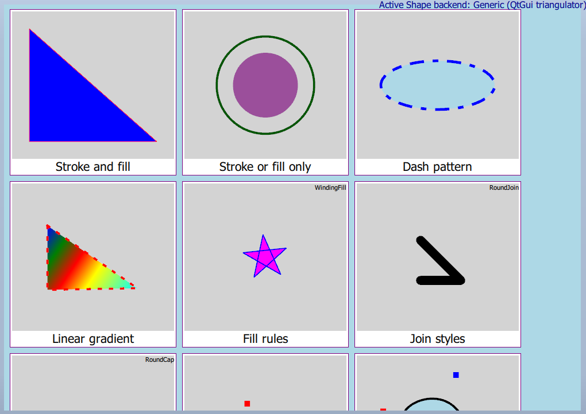

Qt Quick Examples - Shapes
A Qt Quick example demonstrating the use of shape items.

This example demonstrates the usage of the Shape type in Qt Quick. Shapes allow efficiently rendering stroked and filled lines, curves, and arcs in Qt Quick scenes.
Running the Example
To run the example from Qt Creator, open the Welcome mode and select the example from Examples. For more information, visit Building and Running an Example.